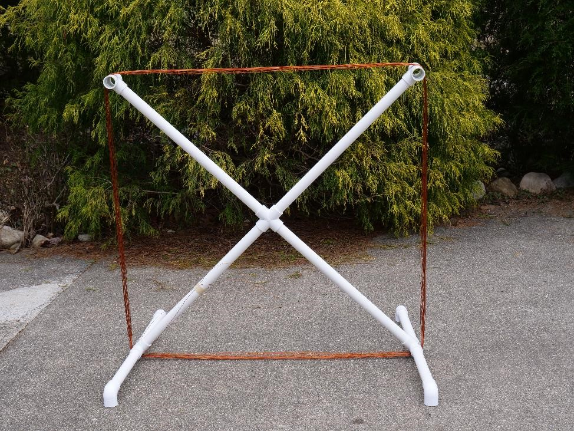
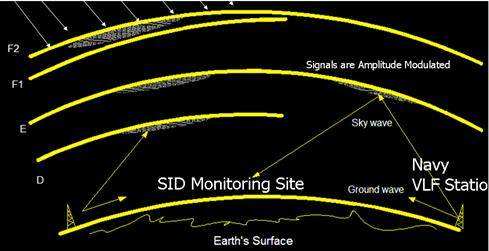

| Home |
| Contact |
| Projects |
| Resources |
| Partners |
Small Loop Antenna |
 |
|
Figure 1: The Small Loop Antenna, image by Ellie White
The Small Loop Antenna is a very simple radio telescope design that allows you to detect a signal from a 24 kHz Navy submarine communication station. While we can’t hear what the Navy is telling its submarines with our antenna setup, we can use our detection of their signal to do some pretty cool science. Since the submarine communication station transmits at such a low frequency, it bounces off a layer of the Earth’s atmosphere called the ionosphere. When solar activity impacts the ionosphere, this causes atoms in the ionosphere to lose their electrons, or become more ionized. This causes the signal from the Navy transmitter to bounce off a lower layer of the ionosphere before it reaches us. In most cases, that means the signal must travel a shorter distance to reach your antenna, thus, when it reaches your antenna, it will appear much stronger. |
 |
|
Figure 2: Diagram of the ionosphere, image courtesy: http://solar-center.stanford.edu/SID/activities/ionosphere.html
So by simply monitoring the Navy signal and finding where the signal strength increases, you can detect solar flares and solar storms from your own backyard! Included below are some resources to get you started on this fun, and relatively simple, project. ResourcesThis folder contains all of the materials you might need to use the loop antenna in your backyard or your classroom, including curriculum, activities, a construction manual (Attachment D), and code: Small Loop Antenna Materials. Note that the circuit board mentioned in the construction manual can be obtained by contacting the Green Bank Observatory.Also, check out the Stanford SOLAR Center for information about another similar antenna design, and to learn more about space weather and solar activity! |